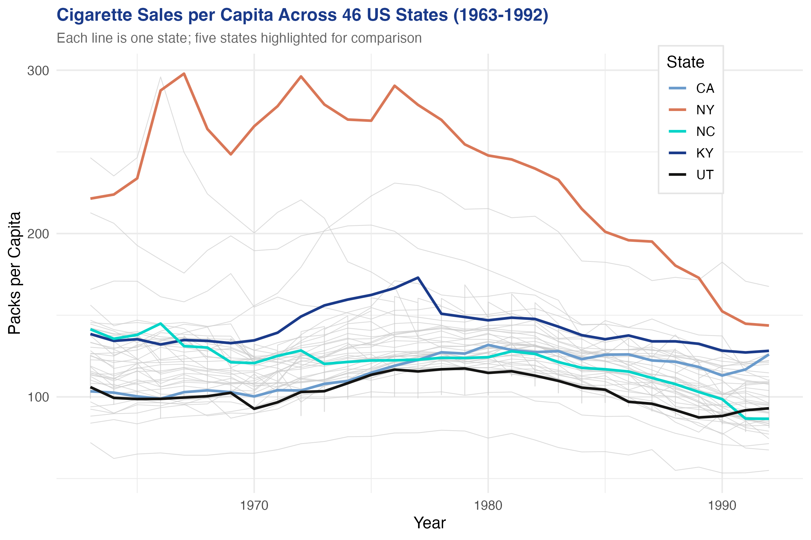
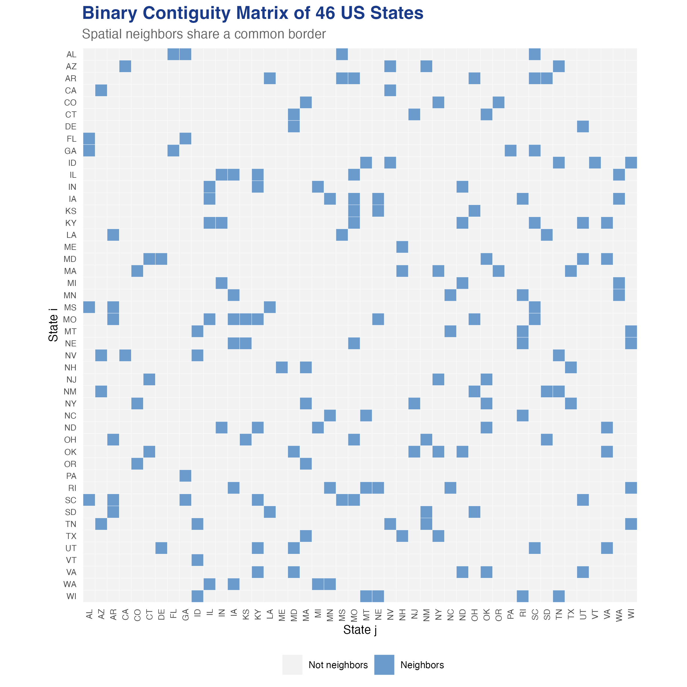
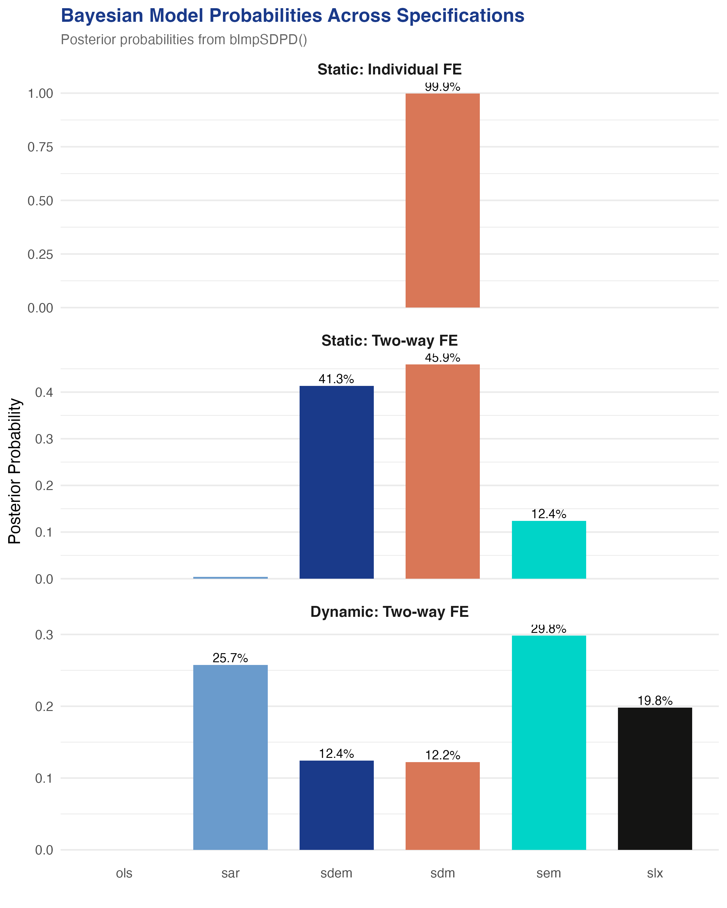
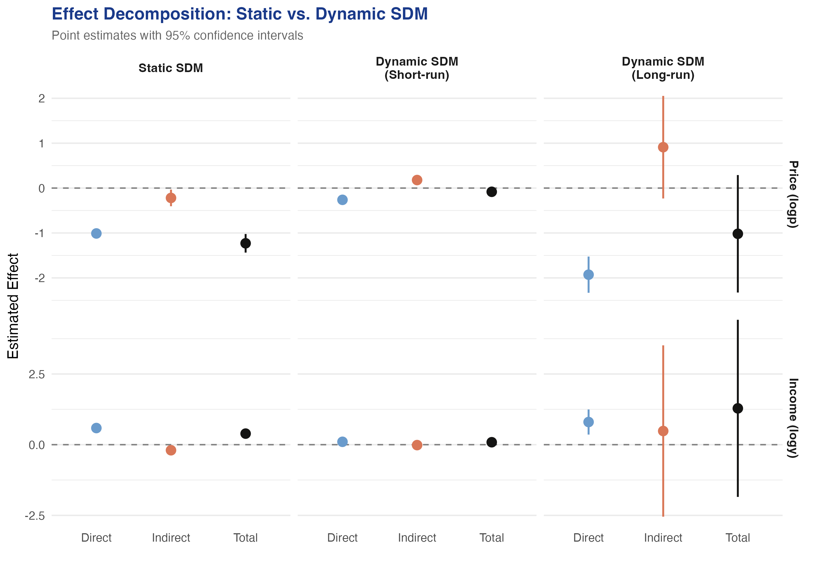

Cigarette demand across 46 US states — where space meets habit
Nagoya University (GSID)
June 11, 2026
Act I
A tax hike in one state sends border-county smokers to a cheaper neighbour. So your consumption depends on your neighbours’ — a spatial spillover.
Standard panel methods assume each state stands alone. What do they miss?

Cigarette sales per capita, 46 US states, 1963–1992. Five states highlighted. Heavy smokers stay heavy; a common downward trend after the late 1970s.
Act II
logc), 1,380 balanced observationslogp); also \(\log\) real income (logy)usa46 binary contiguity matrix, row-normalizedLog-log: every coefficient is an elasticity — % change in consumption per % change in price.

Binary contiguity matrix of 46 US states. Coloured cell = a shared border. Only 8.9% of cells are neighbours.
\[y_t = \rho W y_t + X_t \beta + W X_t \theta + u_t, \quad u_t = \lambda W u_t + \epsilon_t\]
blmpSDPD() scores every model at once with a log-marginal posterior — no ad-hoc sequence of Wald tests.

Posterior model probabilities across three specifications — static individual FE, static two-way FE, dynamic two-way FE.
| Specification | Top model | Prob. | Runner-up | Prob. |
|---|---|---|---|---|
| Static, individual FE | SDM | 99.89% | SDEM | 0.11% |
| Static, two-way FE | SDM | 45.92% | SDEM | 41.31% |
| Dynamic, two-way FE | SEM | 29.84% | SAR | 25.73% |
Once the lagged outcome enters, the spatial signal weakens — the data can no longer tell the spatial models apart.
\[y_t = \rho W y_t + X_t \beta + \mu_i + \gamma_t + \epsilon_t\]
data("usa46", package = "SDPDmod")
W <- rownor(usa46) # row-normalize the contiguity matrix
mod <- SDPDm(logc ~ logp + logy, data = data1, W = W,
index = c("state","year"), model = "sdm",
effect = "twoways", LYtrans = TRUE) # Lee-Yu bias correction
summary(impactsSDPDm(mod)) # direct / indirect / totalThe 46 + 30 = 76 fixed effects create an incidental-parameter bias in spatial ML.
For short panels (\(T < 10\)) the correction would matter far more; here it mainly rescues \(\rho\).
| Effect | logp \(\hat\beta\) | logy \(\hat\beta\) |
|---|---|---|
| Direct | −1.010 | 0.588 |
| Indirect (spillover) | −0.219 | −0.197 |
| Total | −1.230 | 0.391 |
The income spillover is negative (−0.20): richer neighbours pull your consumption down — a channel the SAR cannot see.
−1.23
Total static-SDM price elasticity vs a \(-1.01\) direct effect — spillovers add 22%
\[y_t = \rho W y_t + \tau y_{t-1} + \eta W y_{t-1} + X_t \beta + W X_t \theta + \mu_i + \gamma_t + \epsilon_t\]
A static \(\rho\) must absorb both spatial spillover and serial correlation — so it is biased upward.
| Parameter | Static SDM (LY) | Dynamic SDM (LY) |
|---|---|---|
| \(\tau\) (logc\(_{t-1}\)) | — | 0.864 |
| \(\rho\) (W·logc) | 0.262 | 0.162 |
| \(\beta_{\text{logp}}\) | −1.001 | −0.271 |
| W·logp | 0.091 (n.s.) | 0.196 (sig.) |
Habit persistence is the dominant force; the static SDM was overstating contemporaneous spatial dependence.
When a neighbour raises its price, your consumption rises — smokers buy more in your now-cheaper state.
The spatial lag of consumption hid the effect; only proper dynamics reveal it.

Direct, indirect, and total effects of price and income — static SDM vs dynamic SDM short-run and long-run.
Act III
0.864
Temporal-lag coefficient \(\tau\) in the dynamic SDM (\(t = 67\)) — vs a contemporaneous \(\rho = 0.16\)
Objection. The W·logp coefficient and the impacts read like causal cross-border effects — but the data are observational.
Response. Correct — this is a modeling workflow, not an identified policy experiment.